Credite foto.
Toate fotografiile prăjiturilor provin de pe Wikimedia Commons și sunt folosite conform licențelor de mai jos (domeniu public, CC BY sau CC BY-SA). Pozele au fost decupate pătrat, redimensionate și ușor ajustate ca luminozitate. Unde nu am găsit exact prăjitura, am folosit una asemănătoare (marcată „înlocuitor”).
-
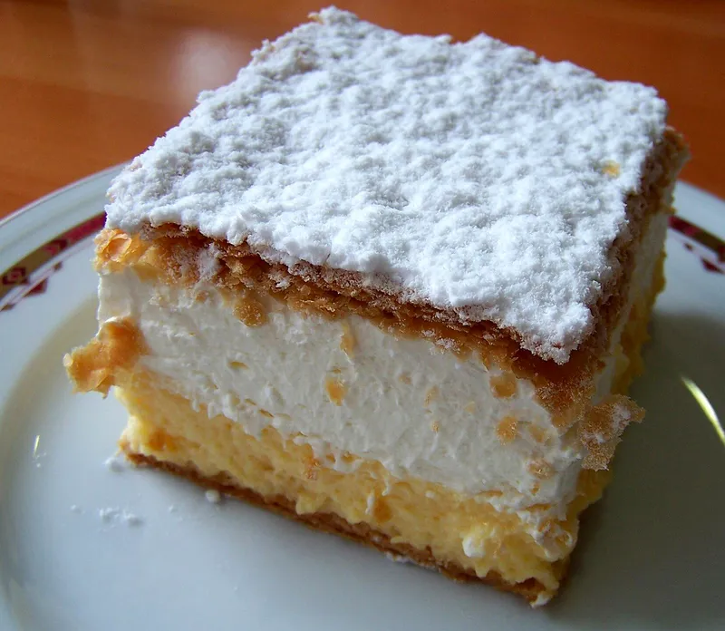
Hero (prima secțiune) „Kremna rezina.jpg” de UkPaolo Licență: CC BY-SA 3.0 · decupată peisaj, redimensionată, saturație ajustată Pagina pe Wikimedia Commons → -
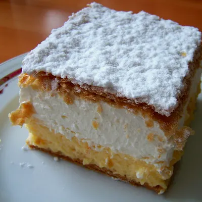
Cremșnit „Kremna rezina.jpg” de UkPaolo Licență: CC BY-SA 3.0 · decupată pătrat, redimensionată, luminozitate ajustată Pagina pe Wikimedia Commons → -
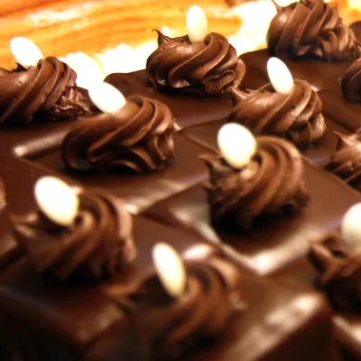
Amandine „Amandine cake.jpg” de Nicubunu Licență: CC BY-SA 3.0 · decupată pătrat, redimensionată, luminozitate ajustată Pagina pe Wikimedia Commons → -
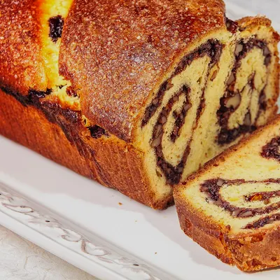
Cozonac cu nucă „Cozonac-cu-nuca-103.jpg” de Vvssmmaann Licență: CC BY-SA 4.0 · decupată pătrat, redimensionată, luminozitate ajustată Pagina pe Wikimedia Commons → -
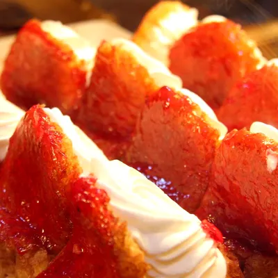
Savarine „Savarine.jpg” de Nicubunu Licență: CC BY-SA 3.0 · decupată pătrat, redimensionată, luminozitate ajustată Pagina pe Wikimedia Commons → -
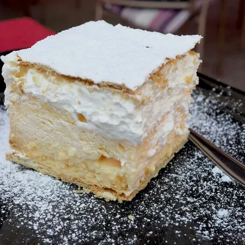
Albă ca zăpada (înlocuitor: kremșnită de Bled) „Bled Cremeschnitte (blejska kremšnita).jpg” de Petar Milošević Licență: CC BY-SA 4.0 · decupată pătrat, redimensionată, luminozitate ajustată Pagina pe Wikimedia Commons → -
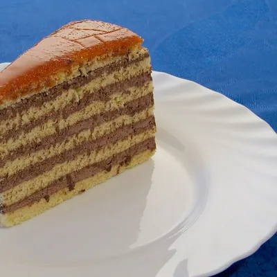
Doboș „DobosCake.jpg” de Hu Totya Licență: CC BY-SA 4.0 · decupată pătrat, redimensionată, luminozitate ajustată Pagina pe Wikimedia Commons → -
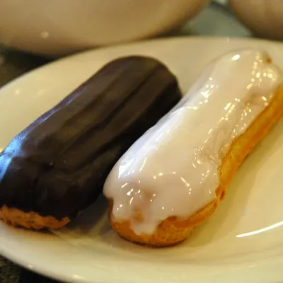
Ecler cu vanilie „Ecler.jpg” de Azh7 Licență: Public domain · decupată pătrat, redimensionată, luminozitate ajustată Pagina pe Wikimedia Commons → -
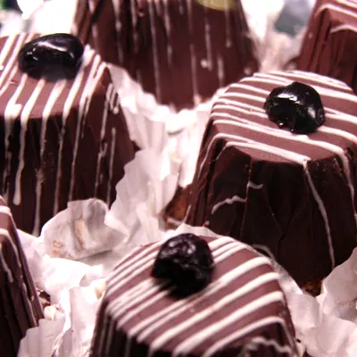
Mascota „Prajitura Mascota.jpg” de Nicubunu Licență: CC BY-SA 3.0 · decupată pătrat, redimensionată, luminozitate ajustată Pagina pe Wikimedia Commons → -
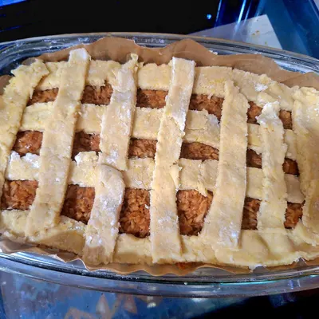
Plăcintă cu mere „Plăcintă cu mere.jpg” de Ioanairinciuc Licență: CC BY-SA 4.0 · decupată pătrat, redimensionată, luminozitate ajustată Pagina pe Wikimedia Commons → -
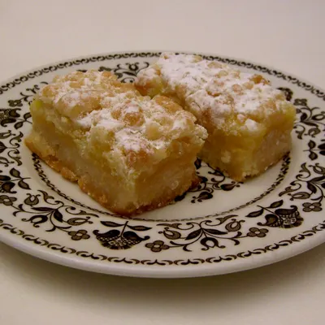
Lămâiță (înlocuitor: lemon bars) „Lemon bars.jpg” de Dracunculus Licență: Public domain · decupată pătrat, redimensionată, luminozitate ajustată Pagina pe Wikimedia Commons → -
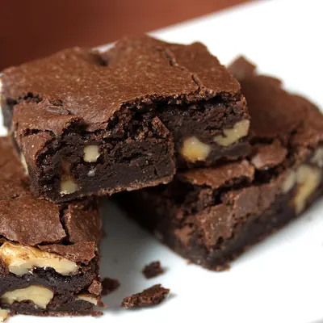
Negresă cu nucă (înlocuitor: brownie cu nucă) „Ultimate Vegan Brownies with walnuts, mjune 2010.jpg” de Veganbaking.net Licență: CC BY-SA 2.0 · decupată pătrat, redimensionată, luminozitate ajustată Pagina pe Wikimedia Commons → -
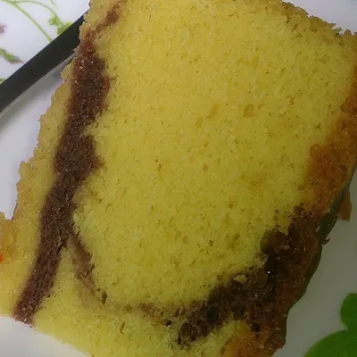
Chec marmorat „Slice of marble cake.jpg” de ProjectManhattan Licență: CC BY-SA 3.0 · decupată pătrat, redimensionată, luminozitate ajustată Pagina pe Wikimedia Commons → -
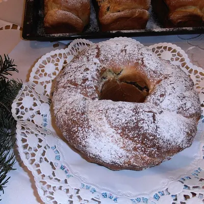
Cozonac de Crăciun (precomandă) „Cozonac cu nuca, rahat si stafide.JPG” de Andcrislor Licență: CC BY-SA 3.0 · decupată pătrat, redimensionată, luminozitate ajustată Pagina pe Wikimedia Commons →
Machetă demo · Site realizat de CristianWeb